陆地卫星系列--- SPOT卫星
SPOT卫星
它是一种地球观测卫星系统。“SPOT”系法文Systeme Probatoire d’Observation de la Terre的缩写，意即地球观测系统。
SPOT系列卫星是法国空间研究中心，（CNES）研制的一种地球观测卫星系统，至今已发射SPOT卫星1-6号，1986年已来，SPOT已经接受、存档超过7百万幅全球卫星数据，提供了准确、丰富、可靠、动态的地理信息源，满足了制图、农业、林业、土地利用、水利、国防、环境、地质勘探等多个应用领域不断变化的需要。
SPOT系统
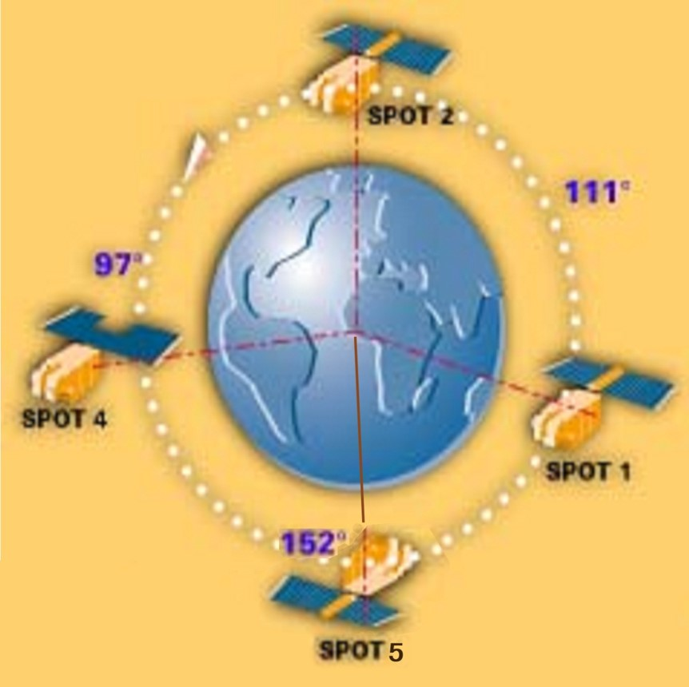- 4颗星同时运行
- 采集数据量大
- 重复观测能力强
- 短时间内可提供
- 满足要求的数据
SPOT 数据波段设置
SPOT 1/2星3＋1个波段； SPOT 4/5号/6号4＋1个波段
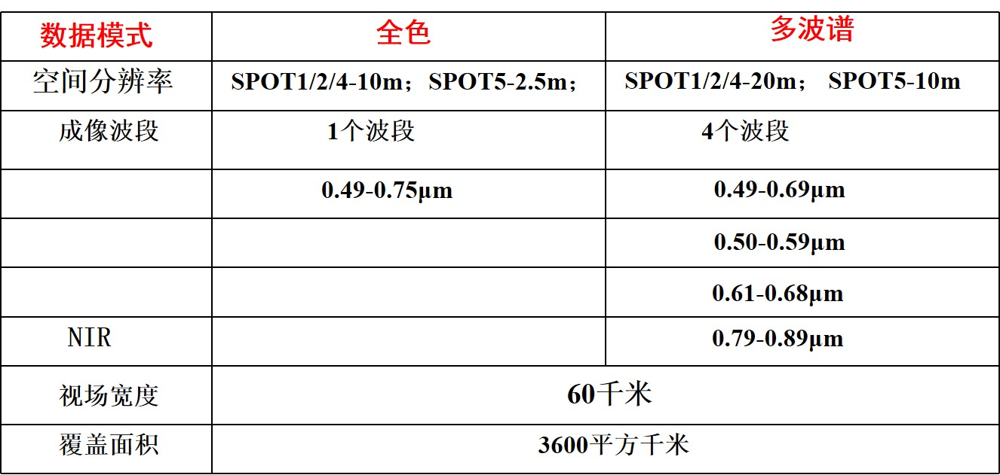SPOT卫星的4个波段与TM光谱的对应关系：
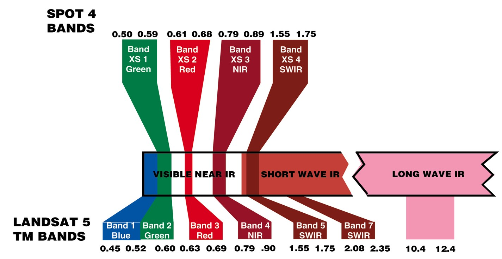由上图可以看出，短波红外（SWIR）是 SPOT新增波段SWIR 对植被、水份、等敏感。在土地利用动态监测中，SWIR 可以提高城市建筑及交通网络的清晰度
Overview
The French earth observation satellites SPOT-1, 2, 3 and 4 were launched into a sun-synchronous sub-recurrent orbit at an altitude of about 822 km in 1986, 1990, 1993 and 1998 respectively. SPOT can observe not only the earth's surface just underneath the satellite but also slantwise to the satellite's path by changing the scan direction of the sensors. It can shorten the time period for observing a specified area repetitively. SPOT-1, -2 and -3 are equipped with CCD sensors called High Resolution Visible Imaging System (HRV). SPOT-4 is equipped with two CCD sensors, HRV's successor, High Resolution Visible and Infrared (HRVIR)and Vegetation (VGT)*1. The observation bands of HRVIR are basically same as HRV and the newly added band 4, short wave infrared (SWIR: 1.58 to 1.75mm). VGT observes wide area with a swath of 2,250 km.
HRV
 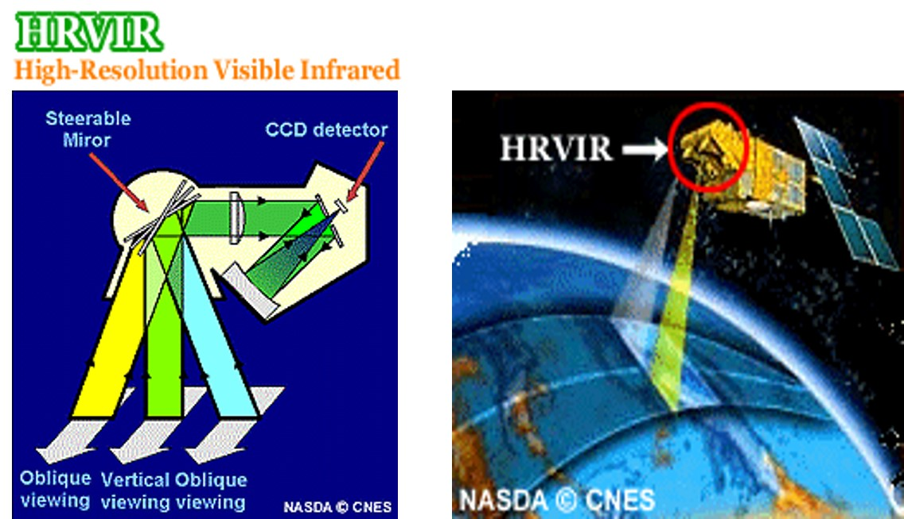
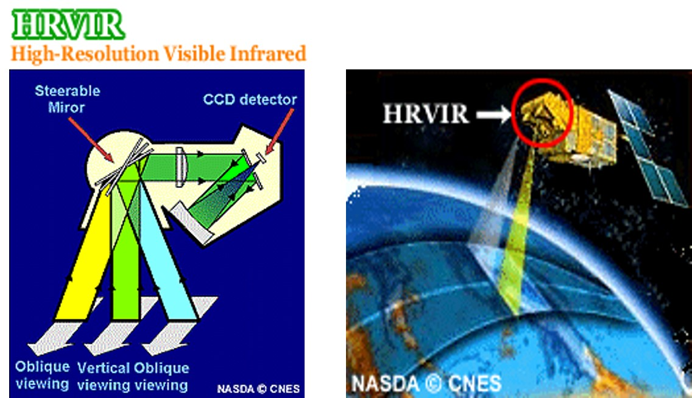
HRVIR Scanning Image
SPOT 6卫星
2012年9月9日当地时间6:23，SPOT 6由印度火箭PSLV-C21搭载，成功发射。9月22日，SPOT6顺利进入695公里高的轨道，与11年发射的Pleiades 1A卫星在同一轨道平面上，2013年1月以后正式商业运行。
空间分辨率：全色 (1.5米) 和多光谱(6 米)
波段：
- 全色 (0.455 - 0.745 µm)；
- 蓝(0.455 - 0.525 µm)；
- 绿(0.530 µm - 0.590 µm)；
- 红(0.625 - 0.695 µm)；
- 近红外(0.760 - 0.890 µm)
宽幅：60x60km
立体成像：立体或三线阵立体
SPOT的倾斜观测功能
重复观测能力单星：2－3天/次，多星：1天/次
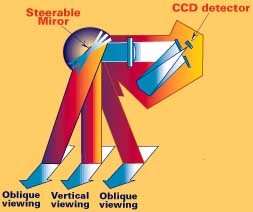 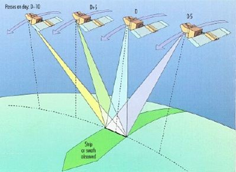Spot-5产品
Spot-5基本产品：
- 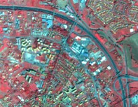
10米多光谱
- 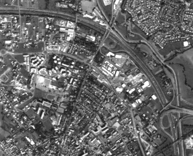
5米全色
- 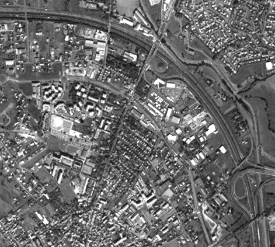
2.5米全色
Spot-5增值产品：
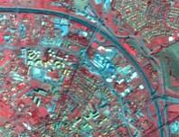+
中巴地球资源卫星
中国资源一号卫星——中巴地球资源卫星（CBERS）
1999年10月14日，我国第一颗地球资源遥感卫星（又称资源一号卫星）在太原卫星发射中心成功发射。资源一号卫星的轨道是太阳同步近极地轨道，轨道高度778km，卫星重访周期是26天，设计寿命是2年。其携带的传感器的最高空间分辨率是19.5m。02号星于2003年10月21日发射成功；03号卫星于2013年发射，但火箭从太原卫星发射中心发射后出现故障，卫星未能进入预定轨道。
其他陆地卫星
其他陆地卫星
美国1973年发射的天空实验室（Skylab）、1978年发射的热容量制图卫星（HCMM）、印度发射的地球资源卫星（Bnaskara）、欧空局的空间实验室（Spacelab）等。


{kind=link}
{kind=link}
{kind=link}
{kind=link}
{kind=link}
{kind=link}
{kind=link}
{kind=link}
{kind=link}